Vegetarian
Non-Vegetarian
Pastas and Soups
Kitchen Essentials
Claire's Cuisine
Sitemap
Contact
Non-Vegetarian Recipes
Filter Recipes:
Asian
American
European
Hispanic
Indian
Mediterranean
North African
Low Carb
Low Calorie
Show All
Chicken Curry
Louisiana Red Beans and Rice
Miso Chicken Stir-Fry
American Goulash
Pesto Chicken and Veggies
Cashew Chicken
Jambalaya
Tuscan Chicken and Cauli Rice
Salsa Verde Chicken
Mediterranean Chicken Quinoa Bowl
Thai Coconut Chicken
Quick Chicken Curry
Asian Chicken Salad
Chicken Tikka Masala
Grilled Honey Lime Chicken with Pineapple Salsa
Chicken Chop Suey
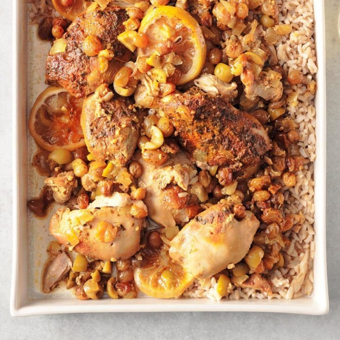
North African Chicken and Rice
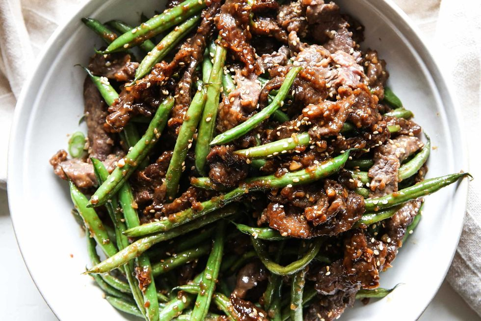
Sesame Ginger Beef
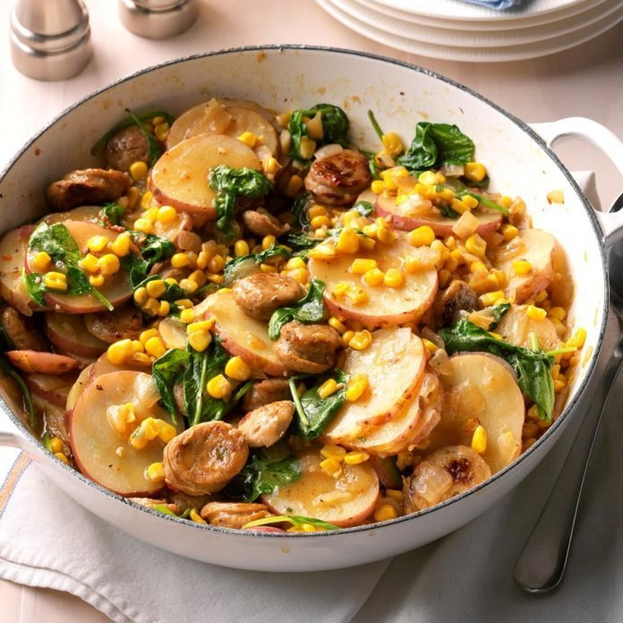
Sausage Veggie Skillet
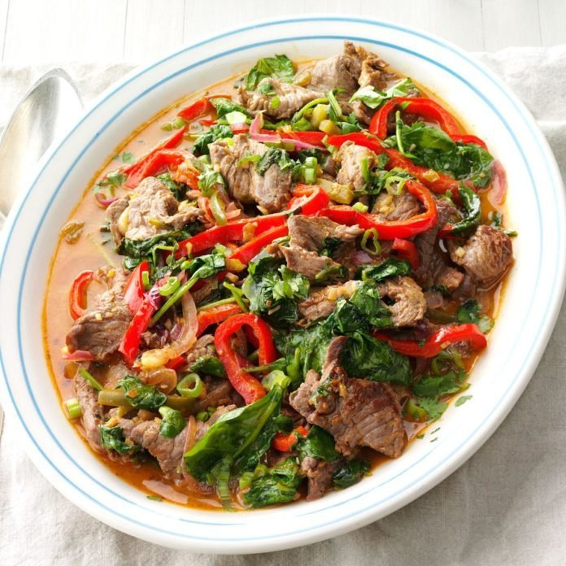
Beef and Pepper Stir-Fry
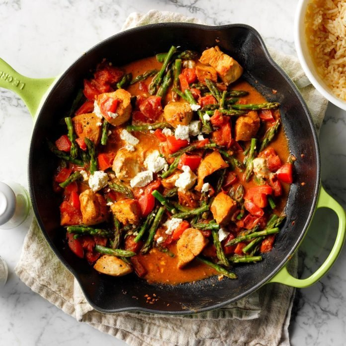
Chicken and Goat Cheese Skillet
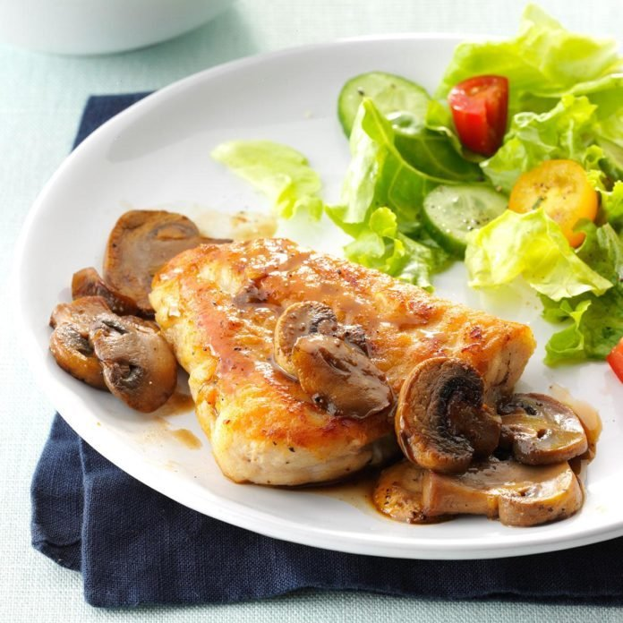
Turkey Marsala
Chicken and Spanish Cauliflower Rice
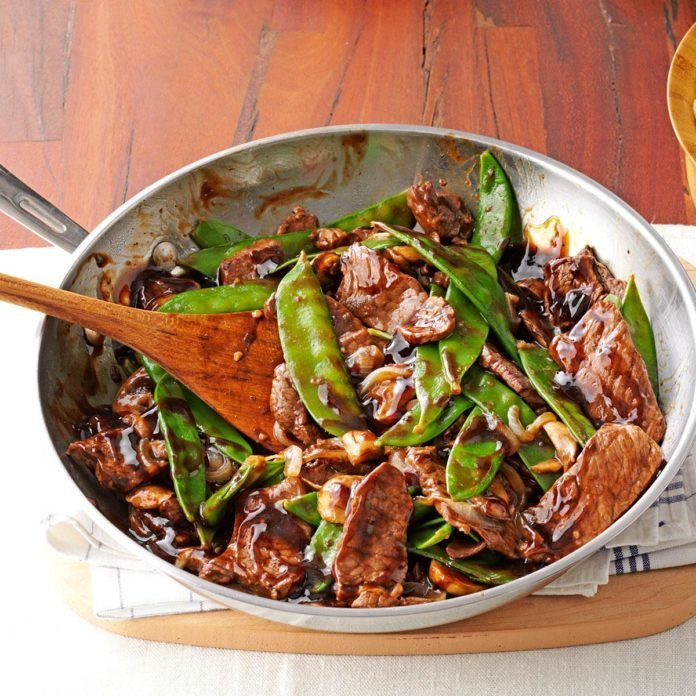
Snow Peas and Beef Stir-Fry
Cheesy Chicken & Black Bean Cauli Rice
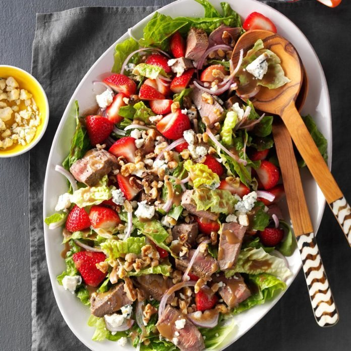
Strawberry-Blue Cheese Steak Salad
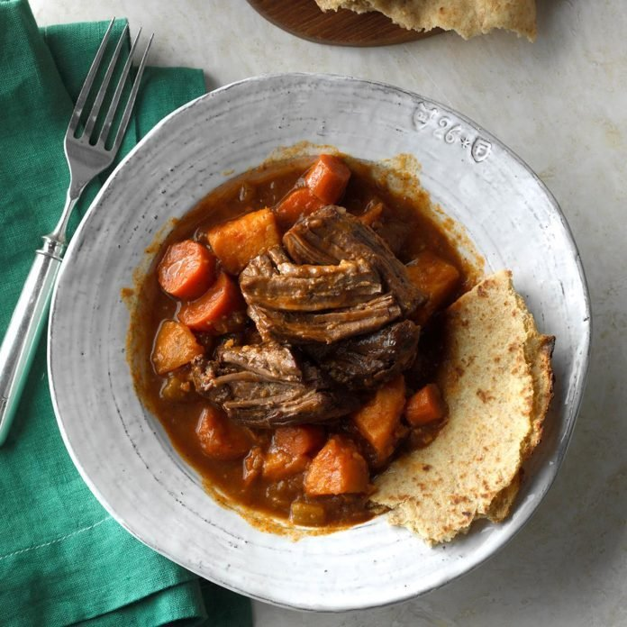
Slow-Cooked Caribbean Pot Roast
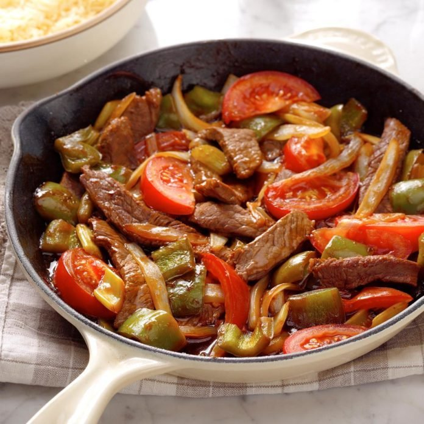
Green Pepper Steak
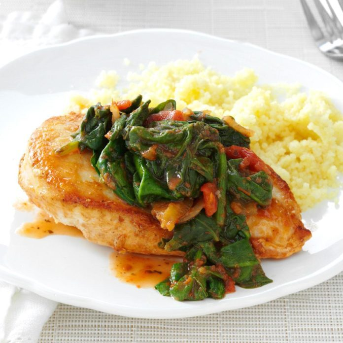
Chicken & Spinach with Couscous
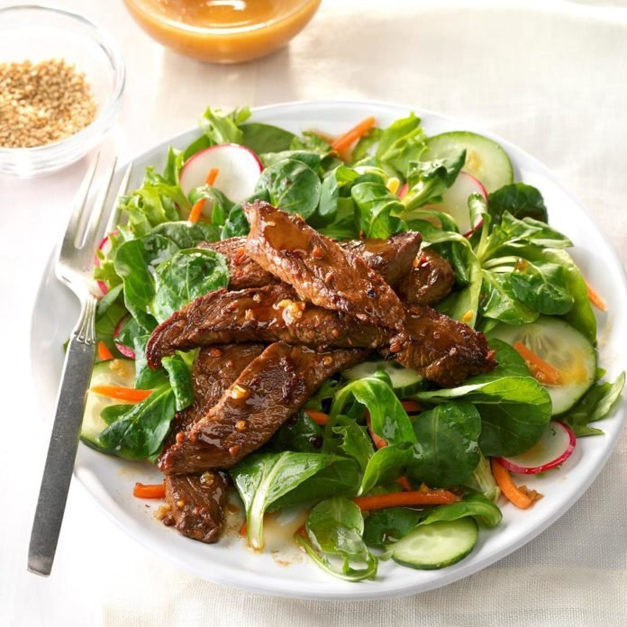
Mongolian Beef Salad


.jpg "chicken tikka masala")

.jpg "cheesy chicken and black bean")